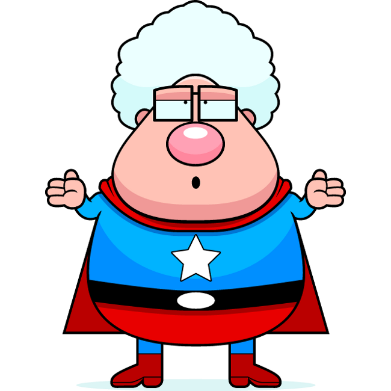
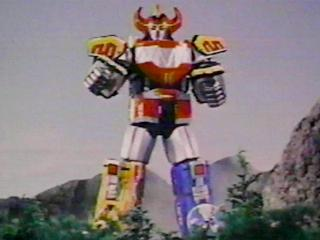
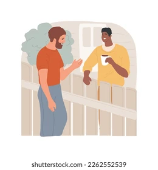
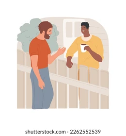
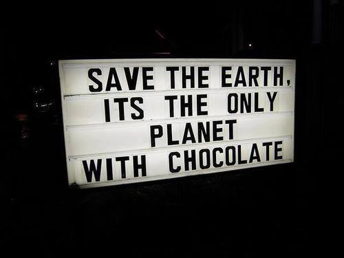
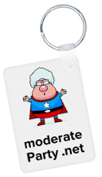

Gonna have a Rock-a-Zoola
'til the end of time!
Oh, yeah!
* * Bop, Doo-Waa! * *
* * Bop-a Bop-a, Doo-Waa! * *

moderate Party .net

Q: what? huh?
A: Whatsa whatsa moderate party....
Starting from a question mark, that's all. It's not centrism; we take sides. We just don't start from knowing who's right, let us think about it for a minute, SHEESH.
"I have fences on both sides of my house," so to speak.

We don't want to start an actual political party (sounds like a bad hassle). We'd rather it just be a thinker and something to talk about.
Without Ranked Choice Voting, it would just die off as a spoiler party, anyway.
"Ya reap what ya sow," right? When does this way stop being a fight?
Let's turn swords to plowshares, figure out how to like each other and stay different.
It can't be a war and be cool, you know?
So anyway, here's a moderate Party for ya, have a look around!

Follow @x
A: Whatsa whatsa moderate party....
Starting from a question mark, that's all. It's not centrism; we take sides. We just don't start from knowing who's right, let us think about it for a minute, SHEESH.
"I have fences on both sides of my house," so to speak.

We don't want to start an actual political party (sounds like a bad hassle). We'd rather it just be a thinker and something to talk about.
Q: Why do you just repost memes?
Why aren't there like candidates and arguing?
A: No offense, but this whole manner of doing politics is too square. No
funk. Why aren't there like candidates and arguing?
Without Ranked Choice Voting, it would just die off as a spoiler party, anyway.
"Ya reap what ya sow," right? When does this way stop being a fight?
Let's turn swords to plowshares, figure out how to like each other and stay different.
It can't be a war and be cool, you know?
Follow @x
pages
• ❓ F.A.Q. •
• ⚖️ the planks page •
• 😵 failing on purpose •
• 🤠 "Black Bart" •
• 🤔 ...not THAT complicated... •
• the "Steel Man" technique •
• 🌙☀️ "Matched Set" •
• Ranked Choice Voting •
SUDDEN QUESTION! ANSWER NOW!!

copy left out overnite
c. 2005
c. 2005
(0% profit :)
